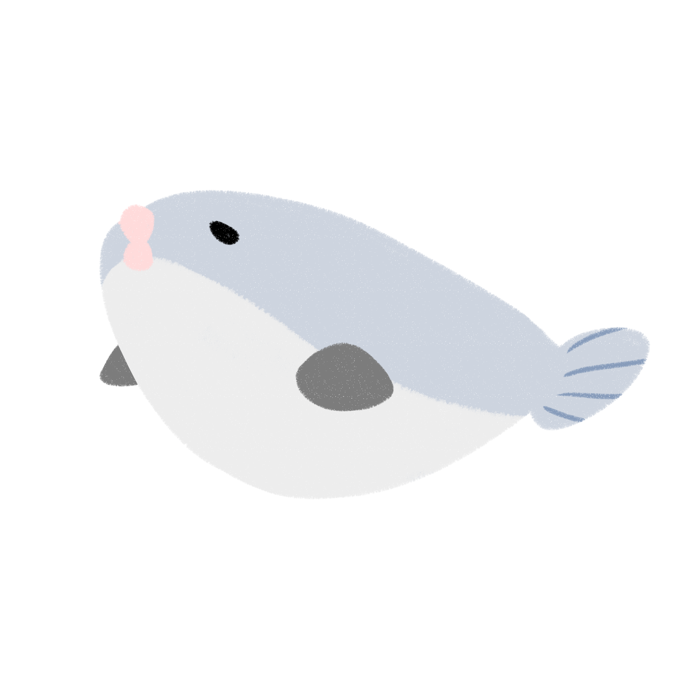

みどころ
色とりどりの生き物たちが生活する姿をみていただくために、水槽内の仕組みを工夫してみました。 海に抱かれるような海中散歩をここでお楽しみください。
ダイナミックラグーン
ここは青と白が混じりあう世界。透き通った青い海には、白い砂の海底が広がっています。 点在するサンゴの隙間（すきま）を小さな魚たちが行き交い、大きなエイが翔ぶように泳ぐ。光降り注ぐ海のオアシスがここにあります。大水槽「サンシャインラグーン」は、アクアスタッフが思い描く、浅いサンゴ礁をイメージしてつくりあげました。南国の浅い海に広がる白い砂地。そこで繰り広げられる小さな魚たちの生命（いのち） あふれる動きと優雅に泳ぐ大きなエイをテーマにした水槽です。

生命の躍動
生き残るために群れ、子孫を残すために群れる。何千何万という生命（いのち）が集まり、刻々と形を変えていく。イワシの群れ、それはまさに生命の塊（かたまり）。イワシの動き、それはまさに生命の躍動なのです。

南国の海
水草につくキラキラとした気泡が酸素の泡だと知っていますか？水草は光を浴びて二酸化炭素を酸素に変え、水の汚れから栄養分を作り出します。真珠のように輝く泡は、水草によって浄化が行われた証拠なのです。

海ののんびりやさん
日本でよくみられる種を含めてウミガメは全世界の暖かい海に生息しています。四肢は上下に平たく、特に泳ぐ時に大活躍するヒレのような前脚は長大。前脚をオールのように使って水をかき、後ろ脚で舵をとるといった泳ぎ方をします。